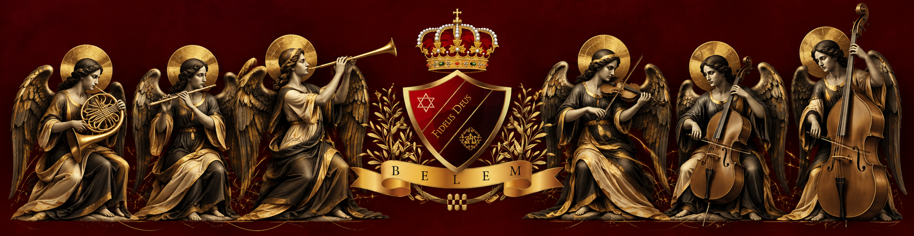

Tiempo litúrgico
Categorías
Selecciona primero un tiempo litúrgico.
Cantos disponibles
Elige una categoría para ver sus cantos.
No has seleccionado ningún canto.

Selecciona primero un tiempo litúrgico.
Elige una categoría para ver sus cantos.
No has seleccionado ningún canto.
Elige las partes que deseas ver en la partitura.